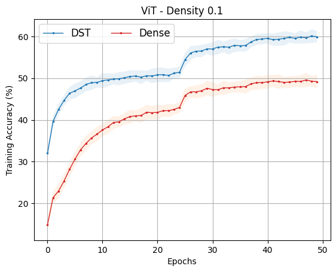
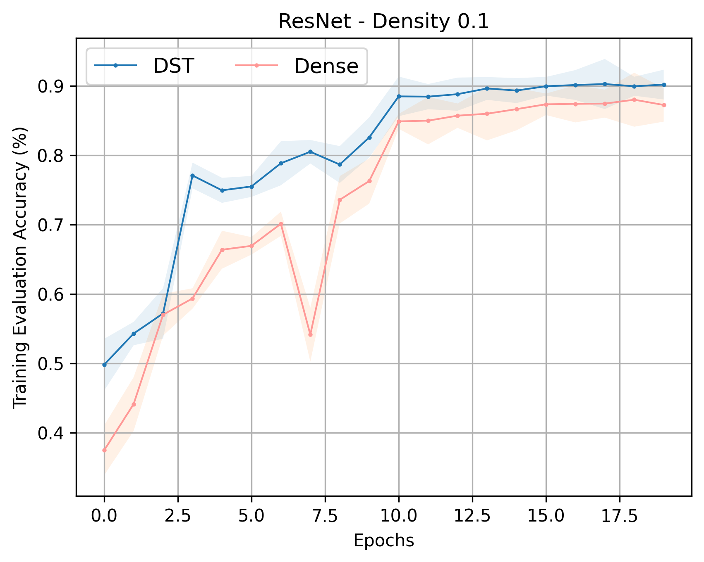
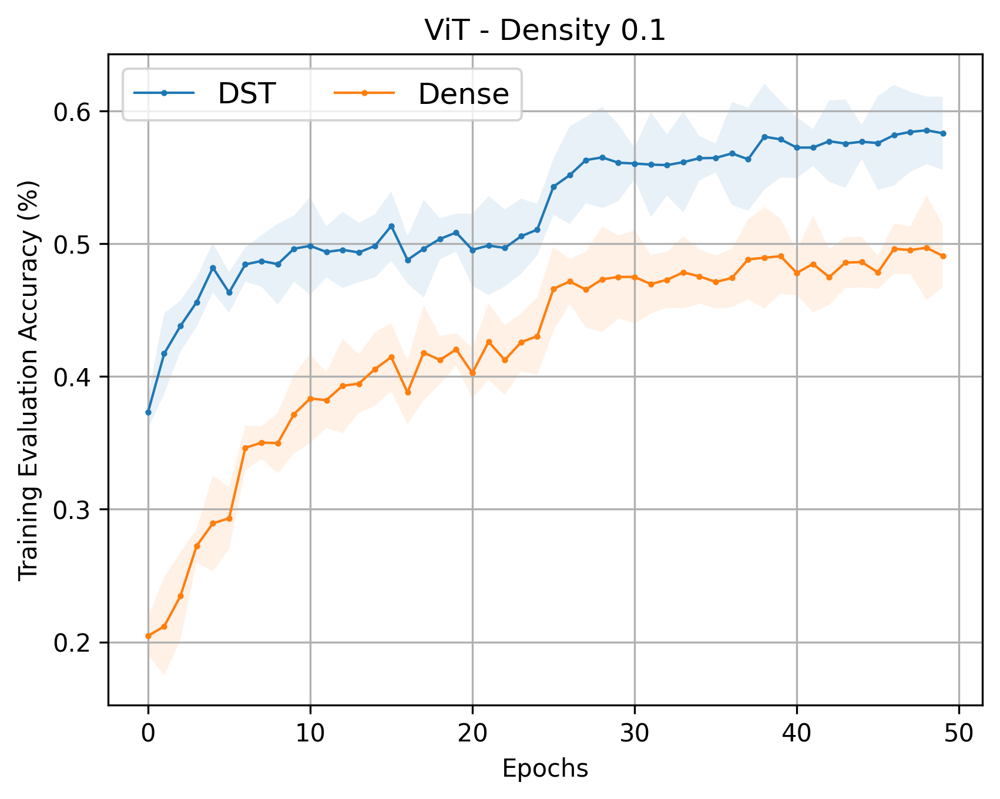
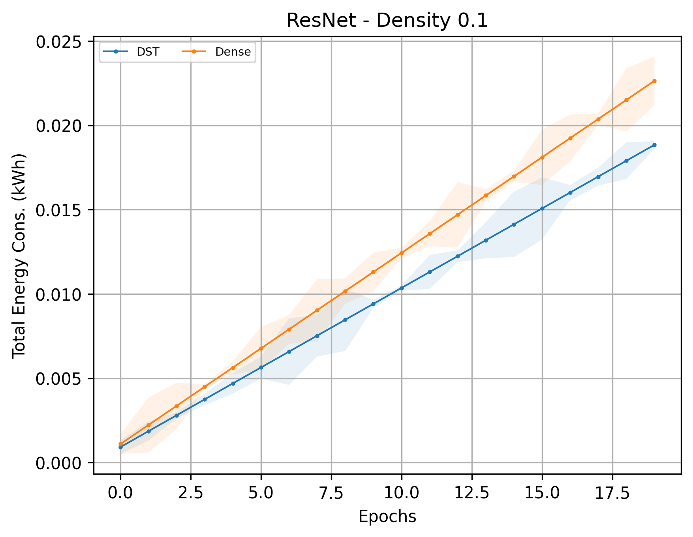
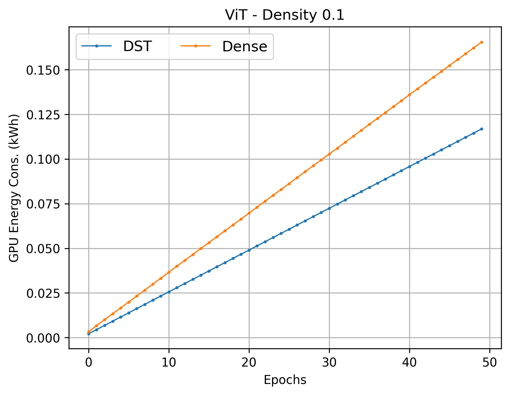

Research Preview · 8-min walkthrough
Dynamic Sparse Training
An interactive look at how sparse neural networks rewire themselves to recover dense-level behavior with far fewer active parameters.
Can sparse networks learn dense-level behavior?
This article introduces the dynamic sparsity setup we use in our research and pairs the explanation with a live, in-page training demo. As the model trains, you can watch its connectivity reshape in real time and see compute and memory savings update with it.
The underlying question is simple: how much of a dense network do we actually need? Dynamic sparse training answers this empirically. We keep only a fraction of the weights active and let the network discover which ones matter as training proceeds.
Before you run the demo
Dynamic sparse training (DST) keeps only a fraction of weights active and lets the network rewire itself during training instead of training a fixed dense model.
Key concepts
-
Density & sparsity.
Density is the fraction of weights that are active; sparsity is everything else.
E.g.
density = 0.2↔sparsity = 80%. - Active vs. inactive. Only active weights receive gradient updates; inactive ones stay pinned at zero, contribute nothing to the forward pass, and are skipped in back-prop.
- Rewiring step. Every K epochs, the network removes its weakest active edges and grows the same number of new candidate edges elsewhere.
- Constant parameter budget. The number of active weights never changes — only their identity does.
- Static vs. dynamic sparse. Without rewiring, the topology is fixed at init and rarely matches dense-level accuracy. Rewiring is what closes the gap.
Two foundational methods
- Remove: smallest positive and largest negative weights — equally from each sign (sign-symmetric magnitude).
- Grow: sample new edges uniformly at random.
- Intuition: biology — synapses re-form stochastically.
-
Remove: smallest
|w|in each layer (sign-agnostic magnitude). -
Grow: inactive edges with the largest
|∇w|on a small batch. - Intuition: wake up the edges whose activation would drop the loss most.
Both target near-zero weights at the same fixed density — SET removes symmetrically from each sign population; RigL ranks by pure magnitude.
|w|.
Grow: SET adds new edges at random; RigL adds the inactive edges with
largest |∇w|.
Map this to the demo below
- Sparsity slider — the percentage of weights kept at zero.
- Rewire Every — the value of K in the loop above.
- Rewiring Method — toggles between SET and RigL.
- FLOPs & Peak memory cards — live counters comparing what the sparse model actually touches against a same-shape dense baseline.
The savings appear immediately; whether the model can recover dense-level accuracy as it rewires is the central question the rest of this article addresses.
The model used in the demo is intentionally tiny so that an entire training run finishes in a few seconds — small enough to demo live, large enough to show the dynamics clearly.
How to read the visualization
The connectivity view animates each forward and backward pass: blue pulses mark feedforward, pink pulses mark backprop, and yellow highlights mark the rewiring epochs where weak edges are removed and new candidate edges are grown.
The metrics panel tracks task loss and accuracy over time. Live FLOPs and memory counters compare what the sparse model touches against what a dense model would have touched, exposing the efficiency trade-off in real time.
Try increasing sparsity, switching the rewiring strategy, or editing the architecture under the gear icon. Watch how each choice changes recovery speed and the savings relative to dense training.
From toy demo to empirical results
The interactive figure above shows the mechanism. The question is whether it survives contact with realistic models and datasets. The results below — together with a growing body of literature — support a clear answer: dynamic sparse training (DST) can simultaneously achieve scientific competitiveness and operational efficiency at scale.
| Model | Method | Energy (Wh) | Train Acc. (%) | Eval Acc. (%) |
|---|---|---|---|---|
| ResNet | Dense | 54.19 | 91.92 | 87.22 |
| DST | 48.29 | 93.96 | 90.16 | |
| ViT | Dense | 129.50 | 49.16 | 49.08 |
| DST | 116.85 | 65.04 | 63.32 |
Scientific competitiveness
Dense neural networks have long been treated as the standard for maximizing accuracy, but recent research increasingly challenges that assumption. DST methods maintain a train–remove–regrow mechanism, letting models continuously adapt their connectivity and explore a larger effective parameter space during optimization. This dynamic exploration — sometimes called in-time overparameterization3 — allows sparse models to generalize as well as, or better than, their dense counterparts despite using far fewer active parameters.
Our empirical experiments align with these findings:
- ResNet: DST improves evaluation accuracy from 87.22% → 90.16%.
- ViT: DST yields a substantial improvement from 49.08% → 63.32%.
These gains are consistent with prior work showing that DST can match or exceed dense performance, and even improve robustness under challenging conditions; in some studies sparse networks outperform dense ones across tasks while staying within the same parameter budget.
Operational efficiency
A major motivation for sparsity is reducing the computational and energy cost of deep learning. Sparse networks activate only a subset of parameters at each step, significantly reducing memory accesses and compute requirements, which translates directly into lower energy consumption and improved scalability.
Our results clearly demonstrate this:
- ResNet: ~11% reduction in energy (54.19 → 48.29 Wh).
- ViT: ~10% reduction in energy (129.50 → 116.85 Wh).
These improvements are consistent with broader findings that DST can reduce FLOPs, training time, and memory usage — sometimes by large margins — without sacrificing accuracy. Recent advances in structured sparsity show that DST can also deliver real hardware speedups (up to 3× inference acceleration), addressing practical deployment concerns.






Bridging the gap to real-world deployment
Earlier concerns about sparsity focused on its limited hardware efficiency, especially for unstructured sparse patterns. Modern research directions — such as energy-aware sparsity — are closing this gap by making sparse computations more compatible with real systems. DST also enables training under fixed resource budgets and supports scaling to larger models by reallocating saved resources, which is especially relevant for large-scale and energy-constrained environments.
Conclusion
Combining empirical evidence and prior research, dynamic sparse training is not only competitive with dense training but can surpass it, while simultaneously reducing energy and computational cost. Rather than introducing a trade-off, DST offers a synergistic advantage: accuracy is maintained or improved through better exploration of parameter space and implicit regularization, and efficiency improves through reduced computation and memory usage. DST is therefore a scalable paradigm for real-world deployment, particularly in the context of sustainable AI and large-scale deep learning systems.
Dynamic sparsity is both scientifically competitive and operationally efficient at real deployment scale.
References
- Mocanu, D. C., Mocanu, E., Stone, P., Nguyen, P. H., Gibescu, M., & Liotta, A. (2018). Scalable training of artificial neural networks with adaptive sparse connectivity inspired by network science. Nature Communications, 9(1), 2383. doi:10.1038/s41467-018-04316-3
- Evci, U., Gale, T., Menick, J., Castro, P. S., & Elsen, E. (2020). Rigging the lottery: Making all tickets winners. In Proceedings of the 37th International Conference on Machine Learning. arXiv:1911.11134
- Liu, S., Yin, L., Mocanu, D. C., & Pechenizkiy, M. (2021). Do we actually need dense over-parameterization? In-time over-parameterization in sparse training. In Proceedings of the 38th International Conference on Machine Learning. arXiv:2102.02887